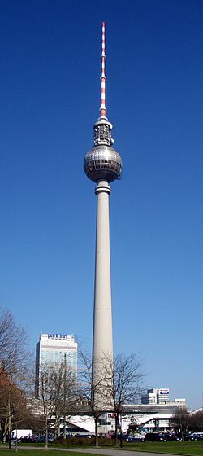
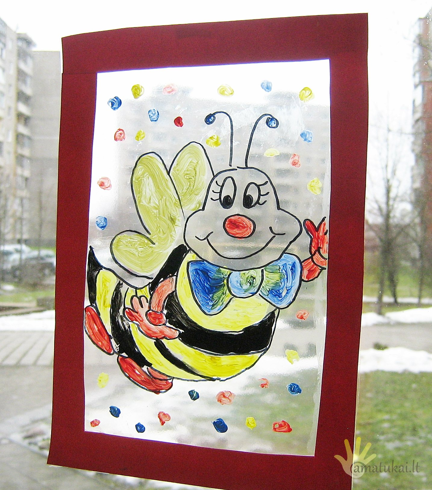

Paveikslėlis – korsigita
- Pasirinktas paveikslėlis išduos, ką reikia pakeisti, kad ...
Pasirinktas paveikslėlis išduos, ką reikia pakeisti, kad būtumėte laimingas. 21 liepos, 2020. Kartais būna, kai nežinome, kur einame, ir ar šis kelias teisingas. Gerai turėti tokias abejones, užduoti tokius klausimus, tik tokiu būdu galite būti laimingas. - Paveiksliukai - Website of lavinamukai
Paveikslėlis ~ 4 balandžio, 2016 ~ Inga Banionytė ~ Komentarų: 3 Koks saldus tas žodis „svajonė“. Ji nuspalvina gyvenimą pačiomis gražiausiomis spalvomis ir suteikia jam įdomumo. - Paveikslėlis – Vilties Šviesa
Posts about Paveikslėlis written by andriusirtautas. Privatumas ir slapukai: Šis tinklalapis naudoja slapukus. Toliau lankydamiesi šiame tinklalapyje, Jūs sutinkate su slapukų naudojimu. - Paveikslėlis – korsigita
Paveikslėlis • Publikuota 2018-04-06 2020-03-19 sukurta Skanėstai Cronut – nuostabios spurgos su įdaru Paveikslėlis • Publikuota 2018-03-20 2018-03-20 sukurta Skanėstai - Paveikslėlis | Formatai | ekoistės
Posts about Paveikslėlis written by Skanėstai. Privatumas ir slapukai: Šis tinklalapis naudoja slapukus. Toliau lankydamiesi šiame tinklalapyje, Jūs sutinkate su slapukų naudojimu. - Paveikslėlis | Formatai | Minčių kelionė aplink pasaulį
Čia pateikiami visi straipsniai ir naujienos apie paveikslėlis publikuoti DELFI.LT portale. Foto, video reportažai, komentarai, specialistų apžvalgos. - Paveikslėlis. Pažiūrėkit kitaip
2 paveikslėlis. Jūs nesate įpratęs prie įprastų darbų. Esate aktyvaus gyvenimo būdo žmogus, mėgstantis teigiamas emocijas, o jūsų socialumas padaro jus bet kurios kompanijos lyderiu. Jums nepatinka nuobodžiauti, todėl karantinas jus labai erzina. - Paveikslėlis – Šilutės sekretai
Posts about Paveikslėlis written by Vilties Šviesa. Kviečiami dalyvauti visi norintys pasisemti naujų žinių apie vaikų auklėjimą, tėvai, ieškantys naujų būdų kaip pagerinti santykius su savo paaugliais, kaip spręsti kylančius sunkumus, pasidalinti gerąja patirtimi bei įgyti praktinių pozityvios tėvystės įgūdžių. - Paveikslėlis – Mano tikras gyvenimas
Posts about Paveikslėlis written by korsigita. korsigita. Tinklaraštis specialiesiems pedagogams, tėvams, auginantiems specialiųjų poreikių turinčius vaikus, klausos negalę turinčių žmonių bendruomenei ir visiems tiems, kurie mėgsta ugdymo naujoves - Paveikslėlis – SKANĖSTAI
Posts about Paveikslėlis written by a.c. Privatumas ir slapukai: Šis tinklalapis naudoja slapukus. Toliau lankydamiesi šiame tinklalapyje, Jūs sutinkate su slapukų naudojimu.
Pereiti prie turinio Meniu Mano klasė Klasės naujienos 2020–2021 Klasės naujienos 2019–2020 Klasės naujienos 2018–2019 Klasės naujienos 2017–2018 Klasės naujienos 2016–2017 Klasės naujienos 2015–2016 Klasės naujienos 2014–2015 Klasės naujienos 2013–2014 Apie svetainę Apie mus rašo Apie mane Mano publikacijos
korsigita
Tinklaraštis specialiesiems pedagogams, tėvams, auginantiems specialiųjų poreikių turinčius vaikus, klausos negalę turinčių žmonių bendruomenei ir visiems tiems, kurie mėgsta ugdymo naujoves
Paveikslėliai
SVEIKINIMAS KURČIŲJŲ BENDRUOMENEI
Paveikslėlis • Publikuota 27 rugsėjo, 2019 27 rugsėjo, 2019 sukurta korsigitaŠVIESĄ NEŠANTIEMS
Paveikslėlis • Publikuota 3 spalio, 2018 3 spalio, 2018 sukurta korsigitaRUGSĖJO PRANEŠIMAS
Paveikslėlis • Publikuota 30 rugpjūčio, 2018 31 rugpjūčio, 2018 sukurta korsigitaVELYKINIS LINKĖJIMAS!
Paveikslėlis • Publikuota 31 kovo, 2018 sukurta korsigitaŠIAIS METAIS AŠ NORĖČIAU
Paveikslėlis • Publikuota 30 gruodžio, 2017 30 gruodžio, 2017 sukurta korsigitaKALĖDŲ PAŽADAI
Paveikslėlis • Publikuota 23 gruodžio, 2017 23 gruodžio, 2017 sukurta korsigitaMOKYTOJAU, DUOK MOKINIUI SPARNUS…
Paveikslėlis • Publikuota 2 spalio, 2017 2 spalio, 2017 sukurta korsigitaPADĖKA KURČIŲJŲ BENDRUOMENEI
Paveikslėlis • Publikuota 22 rugsėjo, 2017 22 rugsėjo, 2017 sukurta korsigitaRUGSĖJIS VĖL KELIONĖN ŠAUKIA!
Paveikslėlis • Publikuota 28 rugpjūčio, 2017 31 rugpjūčio, 2017 sukurta korsigitaLAIMINGŲ IR LINKSMŲ VELYKŲ!
Paveikslėlis • Publikuota 11 balandžio, 2017 sukurta korsigitaNavigacija tarp įrašų
Senesni įrašai
Greitai
Mokytojų diena 5 spalio, 2020 Dekite meile vaikams ir savo darbui, tik neperdekite!Bendraukime ir Facebook
Bendraukime ir FacebookKategorijos
Archyvai
Archyvai Pasirinkite mėnesį 2020 m. spalio mėn. (4) 2020 m. rugsėjo mėn. (5) 2020 m. rugpjūčio mėn. (3) 2020 m. liepos mėn. (2) 2020 m. birželio mėn. (6) 2020 m. gegužės mėn. (3) 2020 m. balandžio mėn. (6) 2020 m. kovo mėn. (6) 2020 m. vasario mėn. (5) 2020 m. sausio mėn. (6) 2019 m. gruodžio mėn. (6) 2019 m. lapkričio mėn. (5) 2019 m. spalio mėn. (4) 2019 m. rugsėjo mėn. (4) 2019 m. rugpjūčio mėn. (5) 2019 m. liepos mėn. (3) 2019 m. birželio mėn. (3) 2019 m. gegužės mėn. (4) 2019 m. balandžio mėn. (6) 2019 m. kovo mėn. (4) 2019 m. vasario mėn. (2) 2019 m. sausio mėn. (11) 2018 m. gruodžio mėn. (7) 2018 m. lapkričio mėn. (8) 2018 m. spalio mėn. (5) 2018 m. rugsėjo mėn. (5) 2018 m. rugpjūčio mėn. (3) 2018 m. liepos mėn. (2) 2018 m. birželio mėn. (4) 2018 m. gegužės mėn. (3) 2018 m. balandžio mėn. (3) 2018 m. kovo mėn. (7) 2018 m. vasario mėn. (8) 2018 m. sausio mėn. (5) 2017 m. gruodžio mėn. (6) 2017 m. lapkričio mėn. (4) 2017 m. spalio mėn. (7) 2017 m. rugsėjo mėn. (3) 2017 m. rugpjūčio mėn. (6) 2017 m. liepos mėn. (3) 2017 m. birželio mėn. (3) 2017 m. gegužės mėn. (2) 2017 m. balandžio mėn. (5) 2017 m. kovo mėn. (4) 2017 m. vasario mėn. (5) 2017 m. sausio mėn. (5) 2016 m. gruodžio mėn. (3) 2016 m. lapkričio mėn. (5) 2016 m. spalio mėn. (4) 2016 m. rugsėjo mėn. (7) 2016 m. rugpjūčio mėn. (5) 2016 m. liepos mėn. (2) 2016 m. birželio mėn. (5) 2016 m. gegužės mėn. (2) 2016 m. balandžio mėn. (6) 2016 m. kovo mėn. (10) 2016 m. vasario mėn. (5) 2016 m. sausio mėn. (8) 2015 m. gruodžio mėn. (6) 2015 m. lapkričio mėn. (4) 2015 m. spalio mėn. (6) 2015 m. rugsėjo mėn. (7) 2015 m. rugpjūčio mėn. (6) 2015 m. liepos mėn. (10) 2015 m. birželio mėn. (4) 2015 m. gegužės mėn. (5) 2015 m. balandžio mėn. (5) 2015 m. kovo mėn. (7) 2015 m. vasario mėn. (7) 2015 m. sausio mėn. (5) 2014 m. gruodžio mėn. (7) 2014 m. lapkričio mėn. (3) 2014 m. spalio mėn. (14) 2014 m. rugsėjo mėn. (2) 2014 m. rugpjūčio mėn. (4) 2014 m. liepos mėn. (3) 2014 m. birželio mėn. (4) 2014 m. gegužės mėn. (6) 2014 m. balandžio mėn. (4) 2014 m. kovo mėn. (6) 2014 m. vasario mėn. (6) 2014 m. sausio mėn. (5) 2013 m. gruodžio mėn. (6) 2013 m. lapkričio mėn. (3) 2013 m. spalio mėn. (3) 2013 m. rugsėjo mėn. (5) 2013 m. rugpjūčio mėn. (2) 2013 m. liepos mėn. (2) 2013 m. birželio mėn. (4) 2013 m. gegužės mėn. (5) 2013 m. balandžio mėn. (10) 2013 m. kovo mėn. (7) 2013 m. vasario mėn. (4) 2013 m. sausio mėn. (7) 2012 m. gruodžio mėn. (9) 2012 m. lapkričio mėn. (6) 2012 m. spalio mėn. (7) 2012 m. rugsėjo mėn. (9) 2012 m. rugpjūčio mėn. (3) 2012 m. liepos mėn. (6) 2012 m. birželio mėn. (4) 2012 m. gegužės mėn. (5) 2012 m. balandžio mėn. (3) 2012 m. kovo mėn. (14) 2012 m. vasario mėn. (11) 2012 m. sausio mėn. (15) 2011 m. gruodžio mėn. (3) Follow korsigita on WordPress.comPopuliariausi įrašai
Į PAGALBĄ KLASĖS VADOVUI MOKOMĖS LINKSNIUOTI BŪDVARDŽIUS Sutikite Heloviną su Crayola! GERUMO KALENDORIUSTinklaraščio statistika
2 355 199 Blogą talpina WordPress.com. | Sukūrė: Automattic . korsigita Blogą talpina WordPress.com.



Mauris vulputate dolor
Rutrum fermentum nibh in augue praesent urna congue rutrum.
Etiam posuere